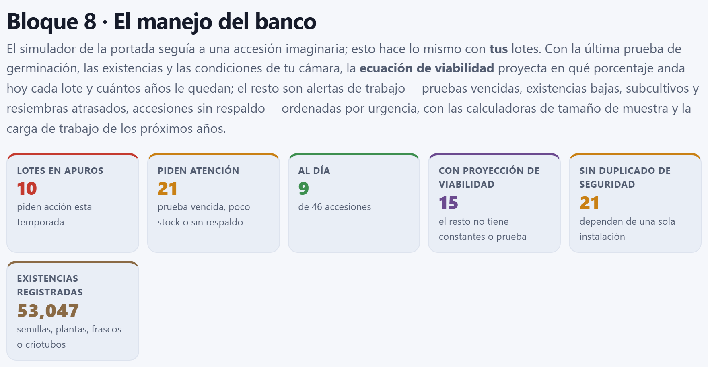
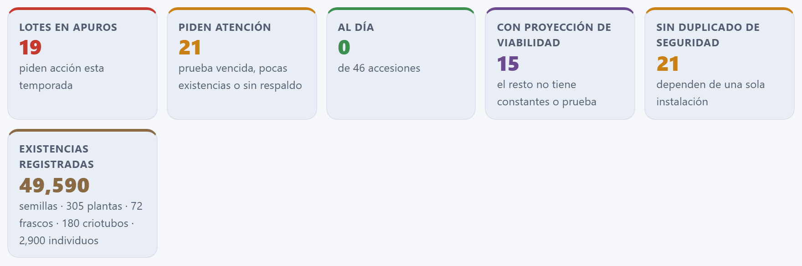
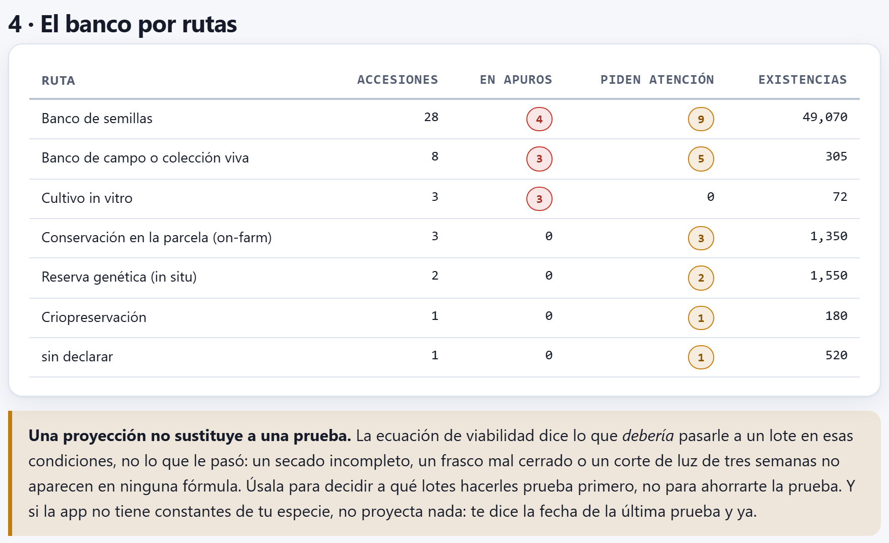

Manejo del banco
El simulador del Bloque 1 seguía a una accesión imaginaria; el Bloque 8 hace lo mismo con tus lotes. Con la última prueba de germinación, las existencias, las fechas de regeneración y las condiciones de tu cámara, proyecta con la ecuación de Ellis y Roberts en qué porcentaje anda hoy cada lote de semilla y cuántos años le quedan antes del umbral; revisa cada ruta de conservación —semillas, campo, in vitro, criopreservación, reserva y parcela— y levanta alertas ordenadas por urgencia; registra las pruebas, regeneraciones, resiembras, subcultivos, revisiones y visitas que vas haciendo; calcula cuántas plantas y cuántas semillas hacen falta para regenerar sin perder los alelos raros, y dibuja la carga de trabajo de los próximos 25 años.
- 8.1El tablero del banco
- 8.2Los supuestos: la cámara y los intervalos
- 8.3La viabilidad de hoy, lote por lote
- 8.4Las alertas, ruta por ruta
- 8.5La lista de trabajo
- 8.6Registrar lo que se hace y el plan en CSV
- 8.7Cuántas plantas y cuántas semillas
- 8.8La carga de trabajo de los próximos 25 años
- 8.9El banco por rutas
8.1El tablero del banco
El Bloque 8 trabaja con cuatro campos del pasaporte que el capítulo 2 presentó (apartado 2.1): GP_STOCK (existencias), GP_GERMPCT (última germinación), GP_GERMDATE (fecha de esa prueba) y GP_REGENDATE (última regeneración, resiembra, subcultivo, revisión o visita), más la ruta de conservación (GP_CONS, o la que se deduce de STORAGE) y el duplicado de seguridad (DUPLSITE). Una casilla vacía es un dato que falta, no un cero. Todo se recalcula al entrar al bloque, sin espera: las cuentas son instantáneas. Si no hay accesiones, el bloque dice Primero carga tus accesiones en el Bloque 2.

Todo lo que el bloque calcula se mide desde hoy, la fecha de tu computadora: los años desde la última prueba, la viabilidad proyectada, las revisiones y visitas atrasadas. Las cifras de este capítulo se tomaron el 31 de octubre de 2026 con la colección de ejemplo; si la abres otro día, las fechas cambian y, con ellas, algunos decimales y quizá alguna alerta. Las fechas incompletas se completan a la mitad: un año sin mes cuenta desde el 15 de junio, y un mes sin día, desde el 15.
Los seis recuadros resumen el estado del banco. Cada accesión recibe el nivel de su alerta más grave (apartado 8.4): en apuros, pide atención, falta un dato o al día.
| Recuadro | Ejemplo | Qué cuenta |
|---|---|---|
| Lotes en apuros | 10 | Accesiones con al menos una alerta grave (roja). En rojo si hay alguna. |
| Piden atención | 21 | Accesiones cuya alerta más grave es de atención (ocre). |
| Al día | 9 | Accesiones sin ninguna alerta, «de 46 accesiones». Las 6 restantes sólo tienen un aviso de dato faltante, que no tiene recuadro propio: 10 + 21 + 9 + 6 = 46. |
| Con proyección de viabilidad | 15 | Lotes de semilla con constantes de viabilidad para su especie y con prueba fechada: los 15 maíces y teocintles en banco de semillas. |
| Sin duplicado de seguridad | 21 | Accesiones ex situ sin copia en otra institución (apartado 8.4). |
| Existencias registradas | 49,590 | Las semillas, en grande, y debajo las demás unidades, cada una por su lado: semillas · 305 plantas · 72 frascos · 180 criotubos · 2,900 individuos. Las semillas suman las del banco de semillas (49 070) y las del lote sin ruta declarada (520); los individuos, los de la reserva y los de las parcelas. |
Las existencias no se suman entre unidades: una semilla, una planta de campo y un frasco no valen lo mismo. Por ruta van en la sección 4 (apartado 8.9). Debajo de las cuatro secciones del bloque, una nota recuerda que Una proyección no sustituye a una prueba. (figura 8.6).
8.2Los supuestos: la cámara y los intervalos
La sección 1 · Los supuestos con los que se hacen las cuentas reúne quince deslizadores. Son las condiciones de tu cámara y los intervalos y mínimos de trabajo de tu banco, ruta por ruta; todo lo que el bloque dice más abajo sale de ellos. El número a la derecha cambia mientras arrastras, y el cálculo se rehace al soltar. Los valores se guardan en el navegador y se conservan al cerrar la app.
![La sección 1: quince deslizadores en tres columnas, Temperatura de la cámara −18, Humedad de la semilla 6, Umbral de regeneración 85, Años entre pruebas de germinación 10, Mínimo de semillas en el frasco 400, Plantas por regeneración 100, Semillas por prueba de germinación 200, Años entre resiembras (campo) 8, Mínimo de plantas (campo) 25, Meses entre subcultivos 12, Mínimo de frascos (in vitro) 10, Años entre revisiones de criotubos 5, Mínimo de criotubos 20, Años entre visitas (in situ) 2 y Años entre visitas (en la parcela) 1; debajo, Constantes de viabilidad cargadas: 1 taxón — Zea mays, el botón Añadir constantes de una especie y la nota sobre las constantes](../img/b8-supuestos.png)
| Deslizador | Intervalo · paso | Qué gobierna |
|---|---|---|
| Temperatura de la cámara (°C) | −20 a 25 · 1 · −18 | La t de la ecuación de viabilidad (apartado 8.3). |
| Humedad de la semilla (%) | 3 a 14 · 0.5 · 6 | La m de la ecuación, en % del peso fresco. |
| Umbral de regeneración (%) | 50 a 95 · 5 · 85 | Por debajo de esta germinación, medida o proyectada, el lote está en apuros y hay que regenerarlo. |
| Años entre pruebas de germinación | 1 a 20 · 1 · 10 | Cuándo vence la prueba de un lote de semilla y cada cuánto se repite en la carga de trabajo. |
| Mínimo de semillas en el frasco | 50 a 2 000 · 50 · 400 | Por debajo, existencias en apuros; por debajo de 1.5 veces el mínimo (600), aviso de que se acercan. |
| Plantas por regeneración | 20 a 300 · 10 · 100 | Las plantas con que regeneras: dan las semillas a sembrar en las alertas, el tercer renglón de la calculadora (apartado 8.7), las plantas de la carga de trabajo y la lista de siembra del Bloque 9. |
| Semillas por prueba de germinación | 50 a 500 · 25 · 200 | Lo que propone descontar al registrar una prueba (apartado 8.6). |
| Años entre resiembras (campo) | 1 a 30 · 1 · 8 | El ciclo del banco de campo, contado desde GP_REGENDATE. |
| Mínimo de plantas (campo) | 5 a 100 · 5 · 25 | Por debajo, la accesión de campo está en apuros. |
| Meses entre subcultivos | 2 a 24 · 1 · 12 | El intervalo del cultivo in vitro de crecimiento lento. |
| Mínimo de frascos (in vitro) | 2 a 50 · 1 · 10 | Por debajo, aviso de pocos frascos. |
| Años entre revisiones de criotubos | 1 a 20 · 1 · 5 | Cada cuánto se descongela un criotubo para comprobar que el material rebrota. |
| Mínimo de criotubos | 5 a 100 · 5 · 20 | Por debajo, aviso de pocos criotubos. |
| Años entre visitas (in situ) | 1 a 10 · 1 · 2 | Cada cuánto se visita una reserva genética. |
| Años entre visitas (en la parcela) | 1 a 10 · 1 · 1 | Cada cuánto se visita una parcela de conservación en finca. |
Las constantes de viabilidad
Debajo de los deslizadores, la línea Constantes de viabilidad cargadas dice cuántos taxones tienen constantes y nombra los cuatro primeros. De fábrica sólo hay uno, 1 taxón — Zea mays, con las constantes publicadas por Ellis y Roberts: KE = 6.474, CW = 2.115, CH = 0.0329 y CQ = 0.000478.
El botón Añadir constantes de una especie abre cuatro preguntas seguidas del navegador: el taxón (te sugiere los de tu colección), KE, CW y la fuente. Las dos constantes proponen los valores del maíz; CH y CQ no se preguntan y toman los valores de arriba, que describen el efecto de la temperatura en muchas especies ortodoxas (apartado 1.5). Escribe el taxón exactamente como el género y la especie del pasaporte, separados por un espacio: Phaseolus vulgaris, no P. vulgaris ni frijol. Si añades un taxón que ya tiene constantes, las nuevas lo reemplazan; así se corrigen también las del maíz, con el nombre Zea mays.
Las constantes propias se guardan en el navegador, y la línea lo dice: con unas para el frijol aparece 2 taxones — Zea mays, Phaseolus vulgaris (1 propia) y un segundo botón, Volver a las publicadas, que, tras preguntarte, borra todas las propias y deja sólo las del maíz publicadas.
En las otras 17 especies de la colección de ejemplo la app no proyecta nada: dice que faltan las constantes y trabaja sólo con el valor y la fecha de la última prueba. Es preferible a inventar un número. Toma KE y CW de tu especie de la Seed Information Database de Kew o de la literatura, y anota la fuente en la cuarta pregunta. Aceptar los valores propuestos para otra especie equivale a suponer que envejece como un maíz.
8.3La viabilidad de hoy, lote por lote
Para cada lote en banco de semillas —o sin ruta declarada, que el bloque trata igual— con constantes para su especie, con germinación y con fecha de prueba, la app proyecta la germinación de hoy y los años que le quedan antes de cruzar el umbral. Es la misma ecuación del simulador del Bloque 1 (apartado 1.5), aplicada desde la última prueba real del lote.
Ki es la germinación de la última prueba expresada en probits: Ki = Φ−1(g0/100); p, los días transcurridos desde esa prueba; σ, los días que tarda la viabilidad en bajar un probit, y Φ, la normal acumulada. Con el umbral u, los años que le quedan al lote desde hoy son
Si la cuenta da un número negativo, el lote ya cruzó el umbral. La germinación se acota entre 0.01 y 99.99 % antes de pasarla a probits, porque Φ−1 de 0 o de 100 es infinito.
La última prueba dio 88 % el 10 de marzo de 2024; el 31 de octubre de 2026 han pasado 2.64 años (965.6 días). La cámara está a −18 °C con 6 % de humedad.
| log10 σ = 6.474 − 2.115 × 0.77815 − 0.0329 × (−18) − 0.000478 × 324 = 6.474 − 1.6458 + 0.5922 − 0.1549 = 5.2655 | |
| σ = 105.2655 = 184 305 días = 504.6 años por probit | |
| Ki = Φ−1(0.88) = 1.17499 | v = 1.17499 − 965.6 / 184 305 = 1.16975 |
| germinación de hoy = 100 · Φ(1.16975) = 87.89 % → la tabla escribe 88 % → 88 % | |
| años al umbral = 504.6 × (1.17499 − 1.03643) − 2.64 = 69.91 − 2.64 = 67.27 años | |
A −18 °C el lote pierde una décima de punto en dos años y medio: la proyección no tiene nada que avisar, y la única alerta del lote es que no tiene duplicado de seguridad.
El Teocintle de Balsas (MEX-ZP-0011) es otro caso: su última prueba dio 81 % el 14 de septiembre de 2023, ya por debajo del umbral de 85 %; la proyección lo pone hoy en 80.83 %, que también se escribe 81 %, y sus «años al umbral» son −83.1, porque en esas condiciones tardaría 83 años en bajar de 85 a 81 %.
La viabilidad proyectada aparece en la columna Germinación de la lista de trabajo, detrás de una flecha: 88 % → 88 % es la última prueba y la de hoy. Debajo va el tiempo desde la prueba, en años con un decimal: hace 2.6 a, o sin prueba registrada si no hay fecha.
Lo que pesan la temperatura y la humedad
A −18 °C y 6 % de humedad la diferencia entre la prueba y la proyección es invisible. Las condiciones de la cámara son las que cambian el cuadro: mueve los dos primeros deslizadores y mira cómo responde la colección.
| Cámara | σ (años por probit) | MEX-ZM-0001 hoy | Años al umbral | En apuros | Al día |
|---|---|---|---|---|---|
| −18 °C, 6 % (de fábrica) | 504.6 | 87.89 % | 67.27 | 10 | 9 |
| 5 °C, 6 % | 122.8 | 87.56 % | 14.37 | 10 | 9 |
| 5 °C, 8 % | 66.8 | 87.19 % | 6.61 | 10 | 9 |
| 20 °C, 12 % (sin cámara) | 6.0 | 76.91 % | −1.81 | 19 | 0 |
En un cuarto frío a 5 °C el maíz azul pasa de tener 67 años por delante a tener 14, y con semilla al 8 % de humedad, menos de 7; el tablero todavía no cambia, pero la carga de trabajo sí: a 5 °C y 6 % aparecen regeneraciones en los años 14 y 20 (apartado 8.8). En un banco comunitario sin cámara, a 20 °C y 12 %, nueve maíces más cruzan el umbral y los lotes en apuros pasan de 10 a 19; los otros cuatro —los de 93 a 95 %— quedan con menos de 3 años y piden atención.

8.4Las alertas, ruta por ruta
Cada ruta de conservación tiene su propio reloj, y el bloque le aplica a cada accesión las revisiones de su ruta. Cada alerta tiene un nivel: grave (en rojo, 3 puntos), atención (en ocre, 2 puntos) o dato faltante (en azul, 1 punto). La tabla 8.4 las reúne todas, con los mínimos e intervalos de fábrica.
Con la colección de ejemplo, las 10 accesiones en apuros son cuatro lotes de semilla bajo el umbral —el teocintle (81 %), el maíz ancho de riego (72 %), el frijol vaquita (84 %) y el frijol tépari (79 %)—, tres accesiones de campo con pocas plantas —el cacao, el aguacate y un chayote— y los tres cultivos in vitro, con 32 a 34 meses sin subcultivo frente a un intervalo de 12. Las 6 que sólo tienen un dato faltante son lotes de semilla sin constantes y con todo lo demás en orden: el ayocote, la calabacita, dos chiles, el tomate milpero y el trigo.
| Ruta | Cuándo aparece y qué dice | Nivel | Ej. |
|---|---|---|---|
| Banco de semillas (o sin ruta declarada) | La última prueba ya dio menos que el umbral: La última prueba dio N %, por debajo del umbral de 85 %. Para regenerar con 100 plantas hay que sembrar unas S semillas. | grave | 4 |
| La prueba está sobre el umbral, pero la proyección de hoy no: La proyección lo pone en N % de germinación…, con la misma frase de las semillas. | grave | 0 | |
| Le quedan menos de 3 años antes de cruzar el umbral: Le quedan unos N años… | atención | 0 | |
| Tiene germinación, pero no hay constantes para su especie: No hay constantes de viabilidad para… | dato | 14 | |
| No tiene fecha de prueba: Nunca se le ha hecho una prueba de germinación. | grave | 0 | |
| Pasaron más años que el intervalo desde la última prueba: Van N años desde la última prueba… | atención | 0 | |
| Existencias por debajo del mínimo (Quedan N semillas…, grave) o de 1.5 veces el mínimo (Las existencias (N) se acercan al mínimo., atención). | grave · atención | 0 · 2 | |
| La casilla de existencias está vacía: No hay existencias registradas. | dato | 0 | |
| Banco de campo | Sin fecha de la última resiembra: No hay fecha de la última resiembra. | atención | 2 |
Más años que el ciclo desde GP_REGENDATE: Van N años desde la última resiembra… | grave | 2 | |
| Menos plantas que el mínimo: Sólo quedan N plantas (el mínimo es 25): la deriva en la próxima resiembra será fuerte. | grave | 3 | |
| Cultivo in vitro | Sin fecha del último subcultivo: No hay fecha del último subcultivo. | atención | 0 |
Más meses que el intervalo desde GP_REGENDATE: Van N meses desde el último subcultivo… | grave | 3 | |
| Menos frascos que el mínimo: Quedan N frascos (el mínimo es 10). | atención | 0 | |
| Criopreservación | Más años que el intervalo desde la última revisión (GP_REGENDATE) o, si no hay, desde que entró al banco (ACQDATE): Van N años desde que entró al banco, sin revisión registrada…; sin ninguna de las dos fechas, No hay fecha de la última revisión de los criotubos. | atención | 1 |
| Menos criotubos que el mínimo: Quedan N criotubos (el mínimo es 20). | atención | 0 | |
| Reserva y parcela | Más años que el intervalo desde la última visita, que es GP_REGENDATE o, si falta, la fecha de colecta: Hace N años que no se registra una visita al sitio… | atención | 5 |
| Toda ruta ex situ | Ningún sitio de DUPLSITE es una institución distinta de INSTCODE: Sin duplicado de seguridad en otra institución. | atención | 21 |
Bajo el umbral hay una sola alerta, la más grave: si la prueba medida ya quedó abajo, la app la dice a ella y menciona lo proyectado sólo cuando se nota al redondear (…por debajo del umbral de 85 %; la proyección lo pone hoy en N %). Al teocintle no se lo menciona, porque 80.83 % también es 81 %. La frase final da las semillas que hay que sembrar para regenerar con las plantas de los supuestos y la germinación de hoy (la proyectada, si la hay): S = ⌈ plantas / (g · 0.9) ⌉, como en la calculadora (apartado 8.7). Si las existencias no alcanzan, lo añade: …y sólo quedan N.
El duplicado de seguridad sigue la misma regla que la validación del Bloque 2 (apartado 2.6): DUPLSITE puede tener varios códigos separados por punto y coma, y basta con que uno sea distinto del código de la institución que conserva la accesión. Las rutas in situ no lo piden; todas las demás, sí, incluidos la criopreservación y el banco de ADN. La única accesión criopreservada del ejemplo, la papa amarga (PER-ST-0022), no tiene revisión registrada y entró al banco en 2018; su alerta dice Van 8.2 años desde que entró al banco, sin revisión registrada (lo previsto es cada 5).
8.5La lista de trabajo
La sección 2 · Qué hay que hacer es la lista de la temporada: una fila por accesión, ordenada por urgencia, como lo explica el párrafo bajo el título. Primero va el nivel: las accesiones en apuros, luego las que piden atención, las que tienen un dato faltante y, al final, las que están al día. Dentro de cada nivel, el puntaje, la suma de los puntos de sus alertas (3, 2 o 1), de mayor a menor; a igual puntaje, el número de accesión, en orden alfabético. Muestra hasta 200 filas.
| MEX-PH-0041, frijol tépari: 79 % < 85 → 3 + sin constantes 1 + 430 < 600 → 2 + sin duplicado 2 = 8 | |
| MEX-TC-0027, cacao: resiembra atrasada (8.7 > 8 años) 3 + 20 plantas < 25 → 3 + sin duplicado 2 = 8 | |
| MEX-SE-0046, chayote: sin fecha de resiembra 2 + 15 plantas → 3 + sin duplicado 2 = 7 | |
| MEX-PA-0026, aguacate: 3 + 3 = 6; MEX-SE-0013, frijol vaquita: 84 % → 3 + sin constantes 1 + sin duplicado 2 = 6 | |
| MEX-ZM-0043, maíz ancho de riego: 72 % → 3 + sin duplicado 2 = 5 | |
| COL-MA-0035, MEX-VA-0025, MEX-ZP-0011 y PER-ST-0021: una sola alerta grave, 3 cada uno | |
| pide atención: MEX-CH-0042, chile costeño: 1 + 2 + 2 = 5; MEX-CA-0028 y PER-ST-0022: 2 + 2 = 4; … |
Las 10 accesiones en apuros van primero, aunque el teocintle sólo sume 3 puntos y el chile costeño, que sólo pide atención, sume 5. Los dos primeros empatan con 8 puntos, y el frijol tépari va antes que el cacao por su número de accesión (MEX-PH antes que MEX-TC); lo mismo el aguacate y el frijol vaquita, con 6, y los cuatro lotes de 3 puntos. Después de las 21 que piden atención vienen las 6 con un dato faltante y, al final, las 9 al día.
| Columna | Qué muestra |
|---|---|
| Accesión | El número de accesión y, debajo, los primeros 24 caracteres del nombre. |
| Ruta | La ruta de conservación, en una etiqueta del color del nivel de la accesión: roja en apuros, ocre si pide atención, azul si falta un dato, verde si está al día. |
| Existencias | GP_STOCK y, debajo, su unidad: semillas, plantas, frascos, criotubos o individuos; «—» si la casilla está vacía. |
| Germinación | Sólo en semilla: la última prueba, la proyección de hoy tras la flecha si la hay, y el tiempo desde la prueba. En las demás rutas, «—». |
| Qué pasa y qué registrar | Las alertas, cada una con una raya del color de su nivel (o la etiqueta al día), y debajo los botones para registrar el trabajo hecho (apartado 8.6). |
![La sección 2: el párrafo La lista va por urgencia, primero los lotes en apuros, luego los que piden atención, los que tienen un dato faltante y al final los que están al día, dentro de cada grupo primero los que suman más alertas y a igual puntaje por número de accesión; los selectores Mostrar en todo y Ruta en todas, el botón Plan de trabajo en CSV y las tres primeras filas de la tabla: MEX-PH-0041, Frijol tepari, Banco de semillas, 430 semillas, 79 % hace 3.8 a, la alerta La última prueba dio 79 %, por debajo del umbral de 85 %. Para regenerar con 100 plantas hay que sembrar unas 141 semillas, y tres más, con los botones Registrar prueba y Regeneración; MEX-TC-0027, Cacao criollo de Ocosing, Banco de campo o colección viva, 20 plantas, germinación —, tres alertas y el botón Resiembra; MEX-SE-0046, Chayote verde liso, 15 plantas, tres alertas y el botón Resiembra](../img/b8-tareas.png)
Dos selectores filtran la lista. Mostrar deja todo, sólo las accesiones en apuros (10), las que piden atención (21), las que tienen faltan datos (6) o las que están al día (9). Ruta deja una sola ruta; cada opción dice cuántas accesiones tiene, por ejemplo Banco de semillas (28) o sin declarar (1), que deja sólo el chile costeño (MEX-CH-0042).
8.6Registrar lo que se hace y el plan en CSV
Los botones de cada fila escriben en el pasaporte lo que hiciste hoy. Cada ruta tiene los suyos y funcionan con las ventanas de pregunta del navegador; si cancelas la primera pregunta, no se guarda nada, y en Registrar prueba tampoco si cancelas la segunda. En Regeneración, cancelar la pregunta de la germinación equivale a dejarla vacía: la regeneración se registra sin prueba. Al terminar, el pasaporte se guarda en el navegador, la tabla del Bloque 2 se actualiza y el Bloque 8 se recalcula.
| Botón · ruta | Pregunta | Cambia en el pasaporte |
|---|---|---|
| Registrar prueba · semilla y sin ruta | El resultado (%, de 0 a 100; acepta coma decimal) y cuántas semillas se usaron, con las de los supuestos propuestas (200; 0 si no descuentas). | GP_GERMPCT (con un decimal), GP_GERMDATE, y resta las semillas de GP_STOCK sin bajar de 0; si no hay existencias anotadas, no descuenta. |
| Regeneración · semilla y sin ruta | Las existencias después de regenerar y la germinación del lote nuevo, con 96 % propuesto; las dos se pueden dejar vacías. | GP_REGENDATE; GP_STOCK si diste existencias; GP_GERMPCT y GP_GERMDATE si diste germinación. |
| Resiembra · campo; Subcultivo · in vitro; Revisión · criopreservación | Las existencias después del trabajo, en su unidad (plantas, frascos o criotubos); vacío si no cambian. | GP_REGENDATE y, si diste existencias, GP_STOCK. |
| Visita · reserva y parcela | Sólo confirma: ¿Registrar hoy una visita al sitio de…? | GP_REGENDATE. |
En el Maíz azul de Apoala (MEX-ZM-0001), Registrar prueba con 80 % y 200 semillas deja GP_GERMPCT = 80, GP_GERMDATE = 20261031 y GP_STOCK = 1 600 (1 800 − 200). El lote pasa de pedir atención a estar en apuros, con 5 puntos y la alerta La última prueba dio 80 %, por debajo del umbral de 85 %. Para regenerar con 100 plantas hay que sembrar unas 139 semillas. (100 / (0.80 × 0.9) = 138.9). Después, Regeneración con 3 000 semillas y 97 % deja GP_STOCK = 3 000, GP_GERMPCT = 97 y las dos fechas en 20261031; al lote sólo le queda la alerta de que no tiene duplicado de seguridad. Del mismo modo, Revisión en la papa criopreservada con 170 criotubos le quita la alerta de revisión vencida.
Los cambios entran al pasaporte como cualquier edición: se ven en la ficha del Bloque 2 y viajan en sus exportaciones. No hay un historial de pruebas; cada registro reemplaza al anterior. Si necesitas conservar la serie, exporta el pasaporte antes de cada temporada.
El plan de trabajo en CSV
El botón Plan de trabajo en CSV guarda plan-de-trabajo.csv, en UTF-8, con una fila por accesión con alguna alerta —37 con la colección de ejemplo— en el orden del pasaporte y sin aplicar los filtros. Si ninguna tiene alertas, la app dice No hay nada pendiente: toda la colección está al día.
| ACCENUMB | ruta | urgencia | existencias | unidad | germinacion_ultima | germinacion_proyectada |
|---|---|---|---|---|---|---|
| MEX-ZM-0001 | Banco de semillas | pide atención | 1800 | semillas | 88 | 87.9 |
| MEX-ZP-0011 | Banco de semillas | en apuros | 900 | semillas | 81 | 80.8 |
Las otras cinco columnas son ACCENAME, TAXON (género y especie), anios_desde_prueba, anios_al_umbral (67.3 y −83.1 en estas dos filas) y acciones, las alertas de la accesión separadas por una raya vertical. La ruta, la urgencia, la unidad y las acciones salen en el idioma de la interfaz; los años, con un decimal. Las celdas sin dato quedan vacías: en las rutas que no son de semilla, las cinco de germinación y años. Ordénalo por urgencia en tu hoja de cálculo y repártelo entre quienes hacen cada tarea.
8.7Cuántas plantas y cuántas semillas
La sección 3 · Cuántas plantas y cuántas semillas tiene dos paneles. El de la izquierda, Plantas necesarias, responde la pregunta de toda regeneración: con cuántas plantas no se pierden los alelos raros. Tiene tres deslizadores: Frecuencia del alelo a conservar (1 a 20 %, de fábrica 5 %), Seguridad deseada (80 a 99 %, de fábrica 95 %) y Germinación del lote (%) (20 a 100 % en pasos de 5, de fábrica 85 %). El resultado cambia mientras arrastras.
![La sección 3: a la izquierda, el panel Plantas necesarias con Frecuencia del alelo a conservar 5 %, Seguridad deseada 95 % y Germinación del lote 85 %; especie alógama 30 plantas y 40 semillas a sembrar; especie autógama 59 plantas y 78 semillas; Regeneración del banco (supuestos) 100 plantas y 131 semillas; y la nota de que con las 100 plantas la probabilidad es de más de 99.99 % en una alógama y de 99.41 % en una autógama; a la derecha, la gráfica de barras Carga de trabajo de los próximos 25 años con escala 0, 13 y 25, picos de 25 tareas en los años 7 y 17, subcultivos en azul todos los años, regeneraciones y resiembras en el año 0, y la leyenda de cuatro series](../img/b8-calculo.png)
Una regeneración con n plantas es un muestreo de gametos. En una especie alógama, cada planta aporta dos gametos independientes, y la probabilidad de que un alelo de frecuencia p quede fuera de los 2n gametos es (1 − p)2n. En una autógama, casi homocigota, cada planta aporta en la práctica un solo gameto efectivo, y el exponente es n. Para conservar el alelo con probabilidad P:
Las semillas que hay que sembrar salen de dividir las plantas entre la germinación g y un establecimiento en campo fijo de 90 %: semillas = ⌈ n / (g · 0.9) ⌉.
Los dos primeros renglones dicen cuántas plantas hacen falta en una alógama y en una autógama, y cuántas semillas sembrar para lograrlas. El tercero, Regeneración del banco (supuestos), toma las plantas por regeneración de la sección 1 y da sus semillas; la nota de abajo da con ellas la probabilidad de conservar el alelo en los dos tipos de especie y, si no alcanzan, cuántas harían falta. Las probabilidades que quedan a menos de una centésima del 100 % se escriben > 99.99 %.
| p = 0.05, P = 0.95: ln 0.05 = −2.99573; ln 0.95 = −0.05129 | |
| alógama: 2.99573 / (2 × 0.05129) = 29.20 → 30 plantas | autógama: 2.99573 / 0.05129 = 58.40 → 59 plantas |
| semillas: 30 / (0.85 × 0.9) = 39.2 → 40 | semillas: 59 / 0.765 = 77.1 → 78 |
| 100 plantas: semillas 100 / 0.765 = 130.7 → 131; 1 − 0.95200 = 99.9965 %, que se escribe > 99.99 %; 1 − 0.95100 = 99.41 % | |
| p = 0.01: alógama 2.99573 / (2 × 0.01005) = 149.04 → 150 plantas y 197 semillas; autógama 299 y 391 | |
| 100 plantas y p = 0.01: 1 − 0.99200 = 86.60 % (alógama); 1 − 0.99100 = 63.40 % (autógama) | |
Con p = 1 % la nota añade Con 100 plantas no se llega a la seguridad pedida en una alógama: harían falta 150. Un alelo del 5 % se conserva con 30 plantas de una alógama; uno del 1 % pide 150. Por eso conviene fijar la frecuencia más baja que te importe, no la más cómoda, y llevar ese número al deslizador Plantas por regeneración.
La FAO recomienda 100 plantas para regenerar una alógama, y es el valor de fábrica del deslizador. La cuenta supone una muestra al azar y cruzamiento sin restricciones: si sólo florece y se cruza una parte de las plantas, el número efectivo es menor que el que siembras, y hay que sembrar más.
8.8La carga de trabajo de los próximos 25 años
El panel de la derecha de la sección 3 es una gráfica de barras apiladas: por cada año, de +0 a +25, cuántas pruebas de germinación (morado), regeneraciones (naranja), resiembras de campo (rojo) y subcultivos in vitro (azul) tocarían si se mantienen los intervalos de la sección 1. El año +k es el lapso de k a k + 1 años a partir de hoy: el +0 son los próximos doce meses, e incluye todo lo atrasado. Es lo que decide el presupuesto de un banco: cuántas siembras, cuánto invernadero y cuántas manos hacen falta cada año.
| Tarea | Cuándo cae |
|---|---|
| Prueba de germinación | En los lotes de semilla (o sin ruta declarada): intervalo − años desde la última prueba, y de ahí cada intervalo. Si está vencida o el lote nunca se probó, la primera cae en el año +0. |
| Regeneración | En el año +0 si la última prueba ya quedó bajo el umbral, tenga o no constantes la especie; en los lotes con proyección, el año en que cruzan el umbral. Cada una cuenta las plantas por regeneración de los supuestos. |
| Resiembra de campo | Ciclo − años desde la última resiembra, y de ahí cada ciclo; en el año +0 si está atrasada o no hay fecha. |
| Subcultivo in vitro | Intervalo − tiempo desde el último subcultivo, y de ahí cada intervalo, evento por evento: con 24 meses, un año toca y el siguiente no. |
| año +0: 4 regeneraciones (teocintle, frijol vaquita, frijol tépari, maíz ancho de riego; ≈ 400 plantas) + 4 resiembras (aguacate y cacao, atrasadas; café y un chayote, sin fecha) + 3 subcultivos = 11 | |
| años +7 y +17: 22 pruebas + 3 subcultivos = 25, el máximo de la escala | |
| en 26 años: 61 pruebas, 4 regeneraciones, 28 resiembras y 78 subcultivos (3 frascos × 26) |
Los dos picos son los 22 lotes probados entre marzo y abril de 2024: sus pruebas vencen juntas dentro de 7.4 años y se repiten diez años después. Es el caso que la nota del panel señala: conviene adelantar parte de esas pruebas para repartirlas en los años vecinos. Otros cuatro lotes, probados en 2023, caen en el año +6.
La gráfica tiene un texto alternativo con el resumen —totales, el año +0 y el año más cargado— para los lectores de pantalla. Al pasar el puntero sobre un segmento, una etiqueta dice el año, cuántas tareas hay y, en las regeneraciones, cuántas plantas suman: año +0: 4 regeneraciones (≈ 400 plantas). La escala vertical tiene tres marcas: 0, la mitad y el máximo (con la colección de ejemplo, 0, 13 y 25). La gráfica también entra en el informe del Bloque 10 (capítulo 10).
La carga cambia con los supuestos. Con pruebas cada 5 años, los picos de 22 pruebas se repiten en los años 2, 7, 12, 17 y 22. Con 24 meses entre subcultivos, cada frasco se subcultiva 13 veces en 26 años y no 26. Con la cámara a 5 °C y 8 % de humedad, a las 4 regeneraciones del año +0 se suman otras en los años 6, 10, 13, 17 y 21; a 20 °C y 12 %, 16 regeneraciones caen en el año +0.
8.9El banco por rutas
La sección 4 · El banco por rutas resume la colección por ruta de conservación, de la que tiene más accesiones a la que tiene menos: cuántas accesiones, cuántas en apuros y cuántas piden atención (en etiquetas de color cuando no son 0) y la suma de sus existencias con su unidad.

Cómo se lee. El banco de semillas concentra las accesiones, pero sus problemas son pocos y casi todos de respaldo: 4 de 28 lotes en apuros. El campo y el in vitro son lo contrario: 3 de 8 y 3 de 3 en apuros, con 305 plantas y 72 frascos en total. Son las rutas que se pierden por descuido —una resiembra que no se hizo, un subcultivo que se atrasó— y las que piden más manos por accesión. La fila sin declarar es el chile costeño, que no tiene GP_CONS y cuyo STORAGE trae un código que no existe en MCPD (15, uno de los errores sembrados para el Bloque 3): el bloque lo revisa como semilla, pero conviene declararle la ruta en el Bloque 2.
La nota del pie, Una proyección no sustituye a una prueba., resume el límite del bloque: la ecuación dice lo que debería pasarle a un lote en esas condiciones, no lo que le pasó. Un secado incompleto, un frasco mal cerrado o un corte de luz no aparecen en ninguna fórmula. Usa la proyección para decidir qué lotes probar primero, no para ahorrarte la prueba.
Cuando algo no sale
| Lo que ves | Por qué pasa y qué hacer |
|---|---|
| Primero carga tus accesiones en el Bloque 2. | No hay pasaporte. Carga tu colección o la de ejemplo (capítulo 2). |
| No hay constantes de viabilidad para… en casi todos los lotes | Sólo el maíz trae constantes. Añade las de tu especie con Añadir constantes de una especie (apartado 8.2). |
| Añadí constantes y el lote sigue sin proyección | El taxón no coincide letra por letra con el género y la especie del pasaporte, o el lote no tiene GP_GERMPCT o GP_GERMDATE. |
| Nunca se le ha hecho una prueba de germinación. o No hay existencias registradas. | Las casillas GP_GERMDATE o GP_STOCK están vacías. Llénalas en la ficha del Bloque 2, o haz la prueba y regístrala. |
| La columna Germinación dice «—» | La ruta no es de semilla, o el lote no tiene prueba registrada. |
| La alerta dice que las semillas no alcanzan para regenerar | Las existencias son menos que las semillas a sembrar. Regenera con lo que haya y pide material al duplicado de seguridad. |
| El año +0 de la carga de trabajo está muy cargado | Ahí cae todo lo atrasado. Reparte lo que puedas en la temporada y registra lo que hagas. |
| Registré algo por error | No hay deshacer. Corrige GP_GERMPCT, GP_GERMDATE, GP_REGENDATE o GP_STOCK en la ficha del Bloque 2. |
| Si vas a leer el bloque por primera vez | entonces pon antes la temperatura y la humedad reales de tu cámara, y los intervalos y mínimos de tu banco, no los de la norma. |
| Si tus especies no son maíz | entonces añade sus constantes con su fuente; sin ellas, trabaja con las pruebas y sus fechas. |
| Si la última prueba o la proyección quedan bajo el umbral | entonces regenera el lote esta temporada, con las plantas que pida la calculadora para el alelo más raro que te importe, y siembra las semillas que dice la alerta. |
| Si le quedan menos de 3 años antes del umbral | entonces adelanta su prueba de germinación: la proyección decide qué probar primero, la prueba decide si se regenera. |
| Si una accesión de campo tiene pocas plantas o la resiembra atrasada | entonces resiémbrala primero y haz un respaldo in vitro o en criopreservación. |
| Si un cultivo in vitro pasó su intervalo de subcultivo | entonces subcultívalo antes que cualquier lote de semilla: el frasco no espera. |
| Si los criotubos no tienen revisión registrada | entonces descongela uno, comprueba que rebrota y registra la revisión. |
| Si una accesión ex situ no tiene duplicado de seguridad | entonces envía una copia a otra institución y anótala en DUPLSITE. |
| Si la carga de trabajo tiene un pico | entonces adelanta parte de esas pruebas para repartirlas en los años vecinos. |
El Bloque 8 escribe en el pasaporte sólo cuando registras una prueba, una regeneración, una resiembra, un subcultivo, una revisión o una visita; lo demás son cuentas. Exporta el pasaporte cada temporada para conservar la historia de tus lotes, que la app no guarda.